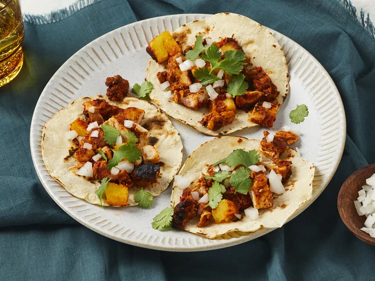

Chicken Al Pastor

Description
This chicken al pastor features almost-charred pineapple and toasty spicy chicken that is incredibly tender and juicy! Serve with of white onion and fresh cilantro.
Ingredients:
- 4 dried guajillo chiles, stemmed and seeded
- 2 tablespoons achiote paste
- 6 large cloves garlic, peeled
- 1 (7 ounce) can chipotle peppers in adobo sauce, drained
- ⅔ cup orange juice
- 3 tablespoons apple cider vinegar
- 3 tablespoons olive oil
- 1 tablespoon ground cumin
- 1 tablespoon light brown sugar
Steps:
- Heat a skillet over medium-high heat. Add dried chiles; cook, turning
occasionally, until toasted and blistered in spots, 3 to 5 minutes. Add 1
cup water to just cover the chiles, and bring to a simmer over medium-high.
Cover and cook, undisturbed, until softened, about 5 minutes. Drain well.
-
Combine chiles, achiote, garlic, chipotles, 2/3 cup onion, orange juice, vinegar,
oil, cumin, brown sugar, and salt in a blender; process until smooth, about 30 seconds.
Reserve 1/2 cup marinade, cover, and refrigerate until ready to use.
-
Place remaining marinade in a shallow dish or large resealable plastic bag, add chicken;
toss to evenly coat. Cover chicken with plastic wrap, and refrigerate at least 8 hours or up
to 24 hours.
-
Place wooden skewers in a shallow dish; cover with water by 1 inch. Let stand at room temperature while chicken marinates.
-
Preheat the oven to 400 degrees F (200 degrees C). Position oven rack 8 inches away from heating element. Line a small roasting
pan or 13- x 9-inch baking dish with aluminum foil.